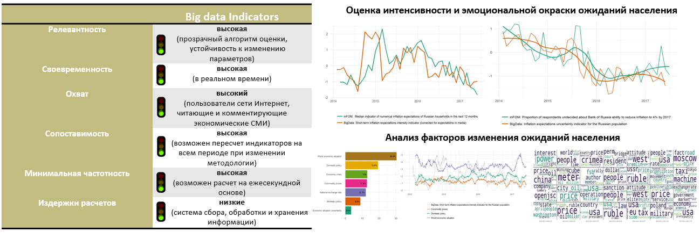

08/11/2018: По результатам октября 2018 г. обновлены данные для индикатора кризисных настроений и индикатора инфляционных ожиданий населения. Отчеты c краткой интерпретацией их динамики добавлены в раздел Reports.
12/10/2018: По результатам сентября 2018 г. обновлены данные для индикатора кризисных настроений и индикатора инфляционных ожиданий населения. Отчеты c краткой интерпретацией их динамики за сентябрь 2018 г. размещены в разделе Reports.
10/09/2018: По результатам августа 2018 г. обновлены данные для индикатора кризисных настроений и индикатора инфляционных ожиданий населения. Отчеты c краткой интерпретацией их динамики за август 2018 г. размещены в разделе Reports.
08/04/2018: Важно! В связи со значительным увеличением доли сообщений бот-аккаунтов в последние месяцы - для всего периода расчета индикаторов была произведена корректировка значений с удалением сообщений с явными признаками ботов. Скорректированные значения индикаторов принципиально не меняют выводы предшествующих отчетов (малое присутствие ботов), однако позволяют сделать более точными текущие и будущие оценки индикаторов.
Big Data Indicators представляют собой альтернативный способ оценки ожиданий населения относительно различных экономических явлений - на основе методов машинного обучения и текстовой обработки. Основой для расчета группы индикаторов являются комментарии Интернет-пользователей к статьям в крупнейших экономических СМИ по заданным темам.
 Методологическая база по построению Big Data Indicators представлена в журнале “Вопросы экономики”, №6, 2017 - Голощапова, Андреев (2017). Оценка инфляционных ожиданий российского населения методами машинного обучения.
Ключевые преимущества подхода: